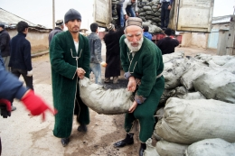

Tajikistan: An earthquake, a cash grant, and a winter’s supply of coal
{kind=link}
Seasonal disasters and earthquakes are the sad norm for many communities in Tajikistan, Central Asia’s smallest and poorest country. Each year, hundreds of natural disasters are recorded across the country. Aid groups have been left with no option but to find new and innovative ways of helping communities survive.
On 10 November, a magnitude 5.2 earthquake struck the districts of Vahdat and Yovon in western Tajikistan. More than 200 homes were damaged or destroyed and 500 families were affected. The Committee of Emergency Situations (CoES) – the Tajik Government’s lead disaster management agency – was on the scene within moments of the disaster and, following an initial assessment, quickly requested the deployment of a Rapid Emergency Assessment and Coordination Team (REACT).
REACT teams are made up of emergency experts from the Government, as well as from local and international NGOs and UN humanitarian and development agencies. The teams – created by OCHA in 2001 – are specifically tasked with responding to small and medium-scale emergencies. The Government and REACT work side-by-side to ensure that they have a comprehensive picture of the needs of the affected people.
A serendipitous training and a new means of assessment
On the day the request came in, a group of REACT members were in the capital city of Dushanbe, a couple of hours from the affected area. They were being trained in a new disaster assessment methodology known colloquially as MIRA – the Multi-Cluster Initial Rapid Assessment.
“Globally and in Tajikistan the humanitarian community has tried many ways of assessing post-disaster needs of affected people,” said the training facilitator Vadim Nigmatov, OCHA’s National Disaster Response Adviser in Tajikistan. “Some worked better than others and MIRA builds on all this knowledge.”
The team was quickly deployed to Yovon, and for the first time in the region, the MIRA methodology was used to identify what affected families would need to survive the approaching winter. The assessments identified gaps in the assistance that had already been earmarked.
“The Government gave us stoves to keep us warm but we did not have coal or the means to buy it,” said Radzhabgul Shukurova sitting by the stove in the only room in her house that survived the earthquake. Because of this, nine of her 15 family members left the village of Arbobdara in Vahdat district, taking all of their savings and moving to a rented apartment in the capital.
Other affected families either moved in with relatives – putting stress on the host family’s limited resources – or stayed in damaged houses despite the risks of being buried alive under rubble.
A timely $91,000 cash grant
The MIRA highlighted the need of affected families for shelter and fuel for heating.
UN agencies dispatched tents, blankets and stoves from the UN Emergency Reserve Stock in Dushanbe. But this was not enough to cover all the needs of those affected, so the UN Resident Coordinator in Tajikistan appealed for OCHA’s emergency cash grant. Within a month and right before the cold settled in, families like Radzhabgul Shukurova’s, received coal purchased with OCHA’s emergency cash grant of US$91,000.
“When you are trying to help people, each day of delay plays against you,” said Valijon Ranoev, a UN Development Programme (UNDP) Project Analyst. “Appealing to donors for such a small disaster would have taken a long time and most likely had little effect. OCHA’s emergency cash grant is designed perfectly to start helping people immediately following a disaster.”
“A success story”
The REACT assessments and the timely injection of OCHA emergency funding helped stabilize the situation.
“Now that the house is warm again I hope that my grandchildren would come back soon,” said Radzhabgul Shukurova during a recent follow-up visit to her home.
“We [CoES and REACT] agree that we have a success story to share with the world,” said Jamshed Kamalov, Head CoES Department for the Protection of Population and Territories. “It’s a story of using the best tools available and learning and applying new approaches to helping people in need.”